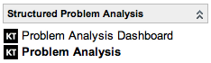

Structured Problem Analysis
| |
Note: This article applies to Fuji and earlier releases. For more current information, see Structured Problem Analysis at http://docs.servicenow.com
The ServiceNow Wiki is no longer being updated. Visit http://docs.servicenow.com for the latest product documentation. |
Contents
1 Overview
Structured problem analysis provides a rational methodology for investigating the cause of a problem or incident. This problem solving methodology was developed by Kepner-Tregoe to help problem managers avoid making wrong decisions based on subjective opinions.
The Structured Problem Analysis application lets you track the problem analysis process through ServiceNow. This feature is available starting with the Dublin release.
Problem managers must complete Kepner-Tregoe training before using the Structured Problem Analysis application.
2 Process Flow
This process is based around a problem analysis record and uses the following steps:
| Step | Description |
|---|---|
| Situation Appraisal | If there is an associated problem or incident record, state the situation within that record. For example: Users cannot access the file share. |
| Create the Structured Problem Analysis record | Create a new problem analysis record and define both the object and the deviation, that is, the degradation of service from the expected result. For example, the object could be File Server, and the deviation could be running with greater than 50ms response times.
Coaching assessments can be requested now, if required. |
| Specify the problem | Define Is and Is Not values for What, Where, When, and Extent aspects. For example, Is in London and Is not in New York. |
| List distinctions and changes | List all possible distinctions and changes to help identify possible causes. For example, London has recently upgraded its server, New York has not. |
| List, test, and confirm causes | List all possible causes, and justify why each may or may not be correct. For example, a general software upgrade might not be the cause because the problem does not affect all users.
Select the most probable cause or causes. Then, create tasks and confirmation methods to test those causes, to finally determine and confirm the cause. |
The process should conclude with a confirmed cause. This confirmed cause can then be addressed through the standard problem management or incident management processes.
3 Problem Analysis Dashboard
The problem analysis dashboard gives problem manages a high-level view of ongoing problem analysis work, including:
- Open problem analysis records (records where the state is not Closed or Cancelled).
- Open problem analysis coaching assessments associated with structured problem analysis. See Requesting Coaching Assessments for more details.
To access the dashboard:
- Navigate to Structured Problem Analysis > Problem Analysis Dashboard.
- Review the information and click any entry to examine it in further detail.
{kind=link}
4 Menus and Modules
|  |
|
{kind=link}
5 Activating Structured Problem Analysis
To activate the Kepner-Tregoe Structured Problem Analysis plugin, make a request through HI. ServiceNow validates that Kepner-Tregoe training has been completed before activating the plugin.
| Click the plus to expand instructions for requesting a plugin. |
|---|
|